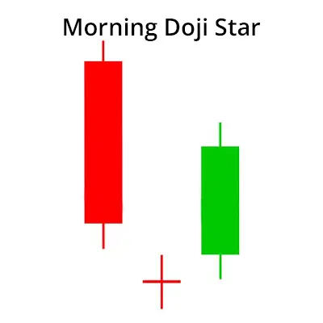
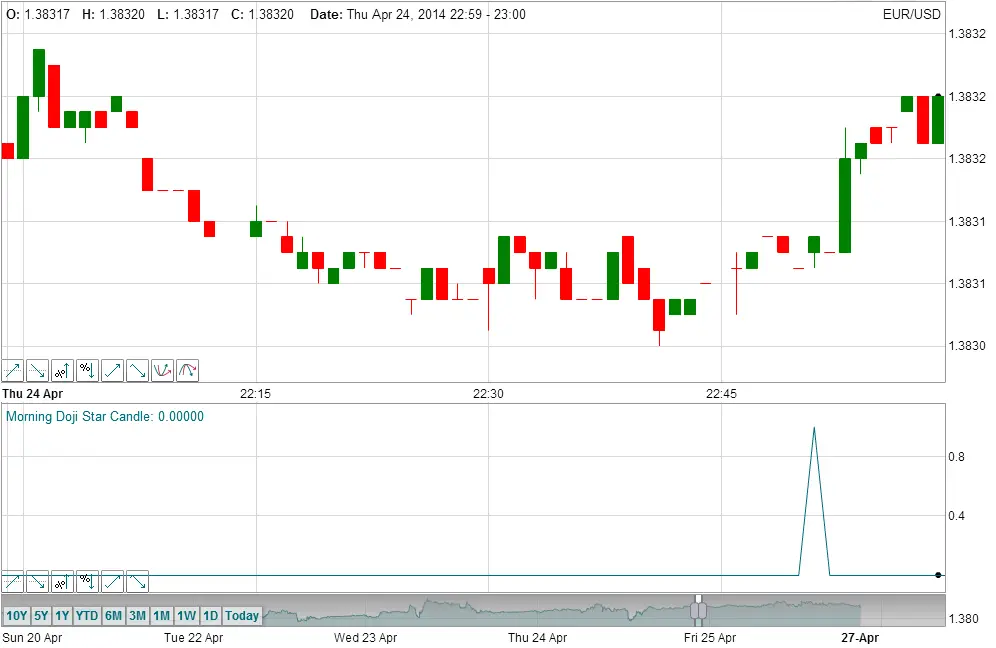

एक मॉर्निंग डोजी स्टार में एक लंबा बियरिश कैंडल, उसके बाद एक डोजी होती है जो उससे नीचे की तरफ गैप होती है, फिर एक तीसरी बियरिश कैंडल होती है जो पहली कैंडल के शरीर के भीतर अच्छी तरह से बंद होती है और ऐसा करके रिवर्स की पुष्टि करती है। यह एक मजबूत बुलिश मूल्य रिवर्सल कैंडलस्टिक पैटर्न माना जाता है।

| An overview of Candlesticks |
एक मोमबत्ती किसी समय अंतराल में मूल्य में परिवर्तन को दर्शाती है जैसे कि 1 दिन या 1 मिनट। मोमबत्ती का मुख्य शरीर समय अंतराल की शुरुआत में खुलने वाली कीमत और अंत में बाजार बंद होने पर कीमत को दर्शाता है। सिर और पूंछ मध्यावधि के दौरान सबसे उच्च और कम कीमतों को दर्शाते हैं।
'हेड' की लंबाई अंतराल के दौरान सबसे उच्च कीमत और खुले या बंद कीमतों में से अधिक में अंतर होता है। 'पूंछ' की लंबाई निम्नतम कीमत और खुले या बंद कीमतों में से कम कीमत के बीच का अंतर होता है। 'शरीर' की लंबाई खुले और बंद कीमतों के बीच का अंतर होता है। मोमबत्ती की पूरी लंबाई 'शैडो' के रूप में जानी जाती है।
यदि कीमत खुलने की कीमत से ऊपर बंद हुई थी, तो यह मोमबत्ती 'बुलिश' मोमबत्ती के रूप में संदर्भित की जाती है और यदि कीमत खुलने की कीमत से नीचे बंद हुई थी, तो मोमबत्ती को 'बियरिश' मोमबत्ती के रूप में संदर्भित किया जाता है। TimeToTrade चार्ट में बुलिश मोमबत्तियों को हरी रंग और बियरिश मोमबत्तियों को लाल रंग से रंगित किया जाता है जैसा कि चित्रित किया गया है:
